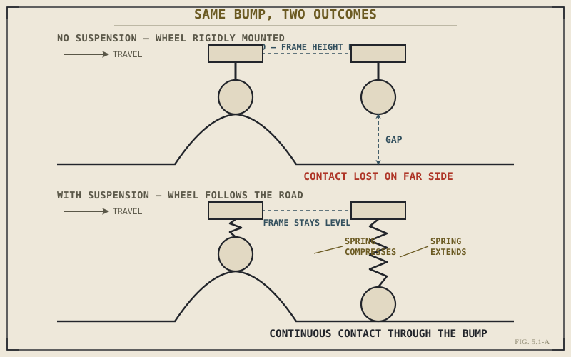

Take the wheels off their suspension and bolt them rigidly to the frame, and a motorcycle would do something far worse than just ride harshly. Every bump would either launch the wheel violently upward, slamming that shock straight into the frame and rider, or, on the way back down over a dip, briefly leave the wheel with no contact against the road at all — right at the exact moments cornering, braking, or accelerating are asking the tyre for grip it can only provide while actually touching the ground. Suspension exists to prevent both of those failures at once, and it's a more demanding job than "smoothing the ride" makes it sound.
Chapter 4.10 closed Part IV with a promise: that trail's self-centering force, and everything else this book explained about chassis geometry, only works if the suspension keeps the tyre's contact patch actually planted on an imperfect road. This chapter opens Part V by making good on that promise, framing exactly what suspension does before the next ten chapters explain how.
Two Jobs, Not One
Suspension performs two distinct jobs simultaneously, and it's worth separating them clearly, the same way Chapter 4.1 separated the chassis's three jobs before diving into any of them. The first is isolation: absorbing the shock of bumps and surface irregularities so they don't transmit directly into the frame and rider as harsh, jarring impacts — this is the job most riders instinctively associate with suspension, and it's real, but it's not the whole story. The second, and arguably more consequential job, is contact maintenance: keeping the wheel in continuous contact with the road surface as that surface rises and falls beneath it, which is the only way the tyre can actually generate the grip that cornering, braking, and accelerating all depend on.
These two jobs usually point in the same direction, but not always, and understanding suspension well means keeping both in view rather than collapsing the whole system down to "comfort."
A motorcycle's suspension isn't primarily there to make the ride feel nice. It's there to keep the tyre touching the road continuously enough to generate the grip everything else in this book has been assuming is available — comfort is a genuine byproduct, not suspension's actual design target.

A wheel encountering a bump, shown once with no suspension — momentarily losing ground contact on the far side — and once with suspension actively maintaining continuous contact through the same bump.
The Two Components That Do This
Suspension performs both jobs through two components working together, and this chapter will only name them here, leaving the full explanation to the chapters immediately ahead. A spring stores energy as the wheel moves upward over a bump and returns that energy as the wheel moves back down, doing the physical work of letting the wheel follow the road surface at all — Chapter 5.2 covers exactly how. A damper controls the speed at which the spring is allowed to compress and extend, preventing the wheel from bouncing uncontrollably after every disturbance — Chapter 5.3 covers that mechanism in full. Neither component alone does suspension's job; a spring without damping oscillates indefinitely, and damping without a spring has nothing to control.
A Common Misconception, Cleared Up Early
It's natural to think of suspension primarily in terms of comfort — a plush ride, bumps smoothed away, a pleasant sensation transmitted through the seat. Comfort is a real and genuine benefit of good suspension, but it's not the engineering target that actually drives suspension design at the level where performance matters most. A race bike's suspension is often tuned firm enough to feel genuinely harsh by ordinary comfort standards, because every design decision behind it is optimized purely around contact patch control under extreme cornering, braking, and acceleration loads — proof that when performance is the actual priority, grip, not comfort, is what suspension engineering is really chasing.
Where This Leads
This chapter named suspension's two jobs and its two components without explaining either in depth. Chapter 5.2 starts with the first component: the spring, what it actually stores and releases, and the different physical designs used to do it.
Key Concepts to Remember
- Suspension performs two distinct jobs: isolating the frame and rider from bumps, and maintaining continuous tyre contact with the road as its surface rises and falls.
- Contact maintenance, not comfort, is the primary engineering justification for suspension's existence — comfort is a genuine but secondary benefit.
- A spring stores and returns energy, letting the wheel follow the road surface; a damper controls how fast that spring is allowed to move, preventing uncontrolled bouncing.
- Neither springs nor dampers alone can do suspension's job — each depends on the other to function correctly.
Cross-References
| ← Ch. 4.10 | Closed Part IV by stating that chassis geometry only works if suspension keeps the tyre's contact patch on the road; this chapter delivers on that claim directly. |
| ← Ch. 4.1 | Modeled the same "name the jobs before explaining the mechanism" structure this chapter uses for suspension. |
| → Ch. 5.2 | Covers springs in full, the first of the two components this chapter introduced only by name. |
| → Ch. 5.3 | Covers damping in full, the second component this chapter introduced only by name. (Not yet published.) |